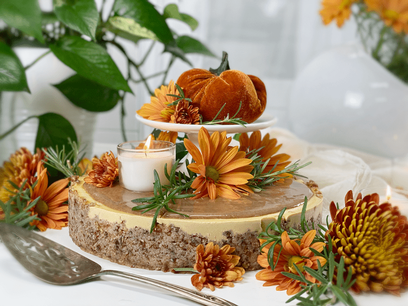
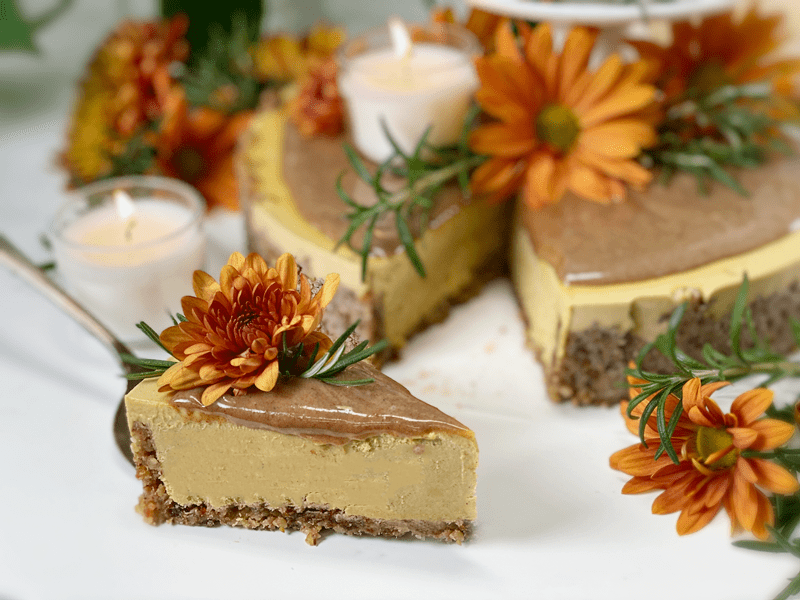
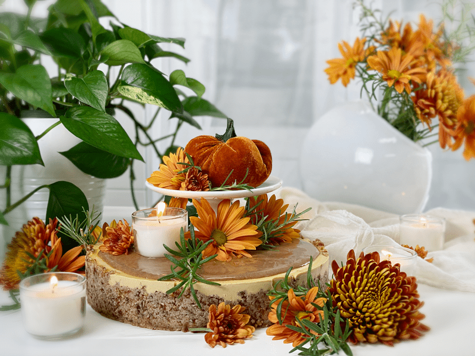
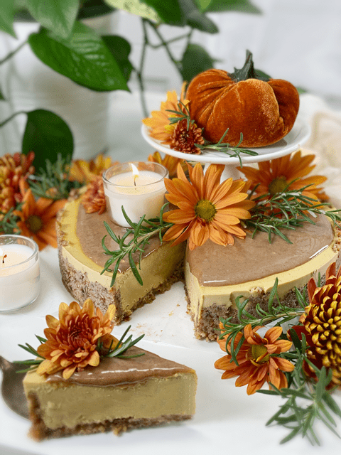
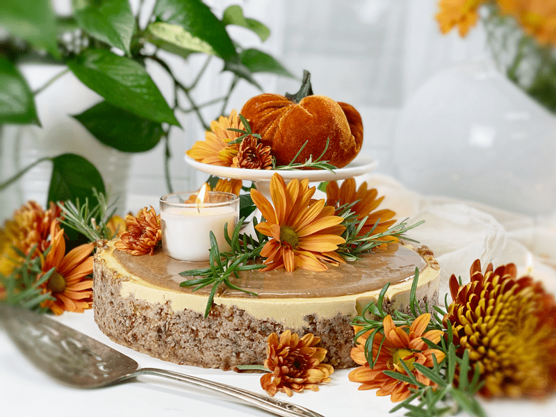
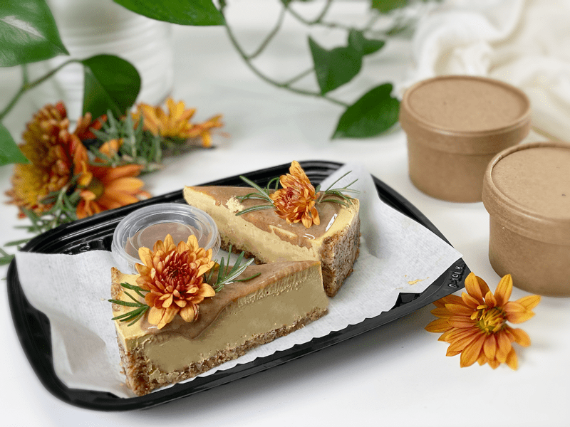

The Great Raw Pumpkin Cheesecake

I almost considered not sharing this recipe, since I already have one or two other raw pumpkin cheesecake recipes on my site… but this site is also my personal “recipe box” and I need to stash it somewhere because I plan on making this over and over again (which I have).

When I was creating our Christmas dinner menu, the only thing that Bob piped in on was that he wanted a raw pumpkin cheesecake for dessert. In the end, I made a total of 4 of these cheesecakes. Why just stop at one! This recipe differs a tad from my others, so feel free to bounce between them to see which one matches up with the ingredients in your pantry. They are all delightful.

Whenever I make cheesecakes, I like to play around with shapes, sizes, and toppings. For a more refined-looking cheesecake, you can create just a bottom crust. This method leaves the sides exposed. Another option is to carry the crust up the sides of the pan (partway or all the way), giving the cheesecake a more rustic flair. And as far as the topping goes, you can spread a nice layer of caramel sauce on top of the cake, or you can pour it into a squeeze bottle and drizzle it all over.

Decorating the top of the cheesecake is in your hands. Make it is as simple or complex as you want to. Every time I make this recipe, I seem to do something different. That goes for pan sizes, too. I have made anywhere between 6″-9″ cheesecakes with this batter. The smaller the pan, the taller the cheesecake will be and the fewer slices you get from it. And at the same time, the larger the pan, the shorted the height and the more slices you can get from it. I created a post that explains how to make several different crusts in Springform pans, so be sure to check it (here). I have also made this recipe in single-serving cups, making it super easy to serve at parties.
I hope you have a blessed and wonderful holiday season. love and blessings, amie sue

Ingredients:
9″ Springform pan
Just bottom layer crust:
- 2 1/4 cups raw pecans, soaked & dehydrated
- 1 1/4 cups packed Medjool dates, pitted
- 1/4 tsp Himalayan pink salt
OR
Crust that covers the bottom and sides:
- 3 cups raw pecans, soaked & dehydrated
- 1 1/2 cups packed Medjool dates, pitted
- 1/4 tsp Himalayan pink salt
Pumpkin filling:
- 3 cups raw cashews, soaked 2+ hours
- 3/4 cup maple syrup
- 1 cup pumpkin puree
- 3/4 cup water
- 1 Tbsp vanilla extract
- 2 tsp pumpkin spice
- 1/2 tsp liquid stevia
- 1/4 tsp Himalayan pink salt
- 1 cup raw cold-pressed coconut oil, melted
- 3 Tbsp lecithin powder
Pecan caramel sauce:
- 1/2 cup raw almond butter
- 1/2 cup maple syrup
- 1/2 cup date paste
- 2 tsp vanilla extract
- 1/8 tsp Himalayan pink salt
- 1/4 cup of water
Preparation:
Crust:
- Assemble a Springform pan with the bottom facing up, the opposite way from how it comes assembled.
- This will help you when removing the cheesecake from the pan, not having to fight with the lip.
- Wrap the base with plastic wrap. This will make it easier to remove the cake when done… unless you plan to serve the cake on the bottom of the pan.
- In the food processor, fitted with the “S” blade, pulse the pecans into small pieces.
- Be careful that you don’t overprocess the nuts and head toward making nut butter. Nothing wrong with that… just not our goal at the moment.
- Feel free to exchange the pecans for walnuts if so desired.
- Add the salt, pulsing it together.
- This ensures that the salt gets well distributed throughout the batter
- Add the dates, and process until the batter sticks together.
- Depending on your machine, you may need to stop the unit and scrape down the sides during this process.
- Test the batter by pinching it between your fingers. If it holds, it is ready. Don’t overprocess. If you do, the nuts will release their natural oils, making the crust oily.
- If the dates you have on hand are hard and dry, rehydrate them in warm water until soft. Drain and discard the water before adding them to the recipe.
- Distribute the crust evenly on the bottom of the pan, using even and gentle pressure. If you press too hard, it might stick to the base of the pan, making it hard to remove slices. You can either just make the crust on the bottom of the pan, or you can bring it up the sides. It is up to you.
- Set aside while you make the cheesecake batter.
Filling:
- Drain the soaked cashews and discard the soak water. Place in a high-speed blender.
- In a high-powered blender combine the cashews, maple syrup, pumpkin puree, water, vanilla, pumpkin spice, stevia (optional), and salt.
- Due to the volume and the creamy texture that we are going after, it is important to use a high-powered blender. It could be too taxing on a lower-end model.
- Blend until the filling is creamy smooth. You shouldn’t detect any grit. If you do, keep blending.
- This process can take 2-4 minutes, depending on the strength of the blender. Keep your hand cupped around the base of the blender carafe to feel for warmth. If the batter is getting too warm, stop the machine and let it cool. Then proceed once cooled.
- You can use a different liquid sweetener if you are not comfortable with stevia. Just be aware of the different flavors and colors that the sweetener might impart to the cake.
- If you don’t have pumpkin spice mix on hand, click (here) to see how to make it.
- With a vortex going in the blender, drizzle in the coconut oil, and then add the lecithin. Blend just long enough to incorporate everything together. Don’t overprocess. The batter will start to thicken.
- What is a vortex? Look into the container from the top and slowly increase the speed from low to high. The batter will form a small vortex (or hole) in the center. High-powered machines have containers that are designed to create a controlled vortex, systematically folding ingredients back to the blades for smoother blends and faster processing…instead of just spinning ingredients around, hoping they find their way to the blades.
- If your machine isn’t powerful enough or built to do this, you may need to stop the unit often to scrape down the sides.
- Gently tap the pan on the counter to remove any air bubbles.
- Chill in the freezer for 4-6 hours (or overnight) and then in the fridge for 12 hours.
- This cheesecake can be made a month in advance, kept frozen until you are ready to enjoy it.
Pecan Caramel Sauce:
- While the cheesecake is firming up, you can make the sauce.
- Combine the almond butter, maple syrup, date paste, vanilla, salt, and water in the blender and process until creamy. The sauce will turn a lighter color and very smooth while it is blending. I use this as my cue that it is ready.
- Once the cake is firm, pour the sauce over the cake and then sprinkle the pecans on top or decorate as desired.
- This cake will keep for 3-5 days in the fridge or safely for 3 months in the freezer. Keep well covered.
-

-

-
It wasn’t long after I took these photos that a friend of ours text messaged me. I asked her if she was in the neighborhood and if she was hungry. She answered yes to both questions. I told her I would put some hot vegetable & bean soup and a couple slices of cheesecake out on the porch for her and her friend. I will be so glad when social distancing isn’t part of our thought processes!
© AmieSue.com